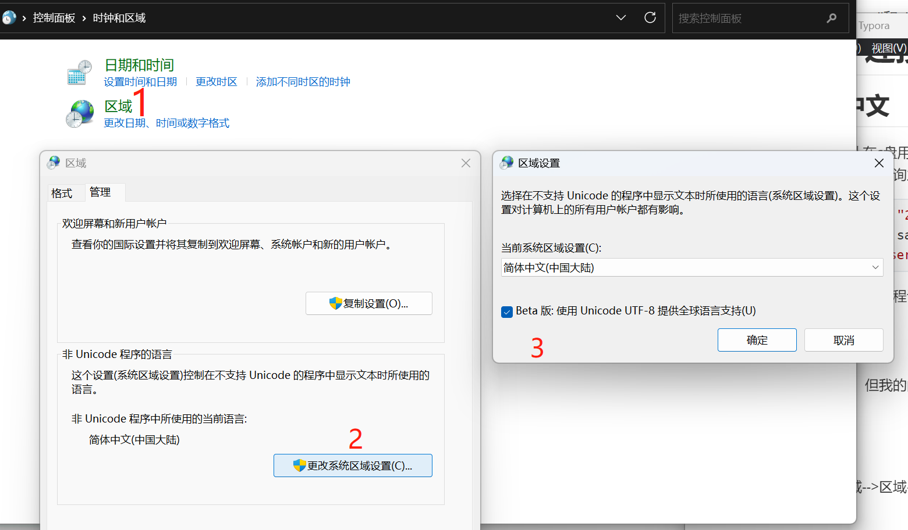
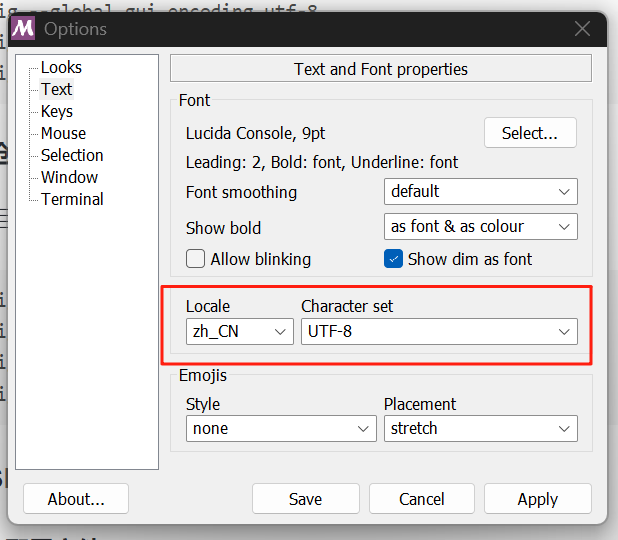
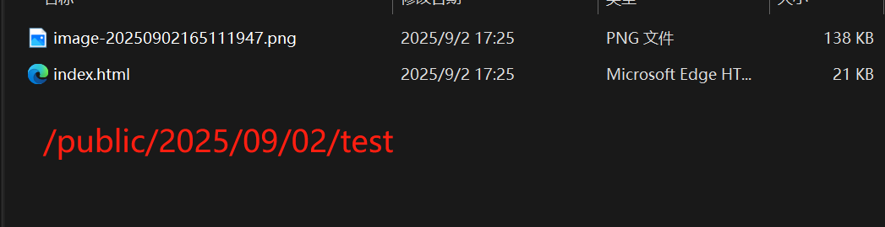

hexo搭建博客的一些问题
前言
今天上传文章的时候又出现了好多问题，还换了主题，打算把遇到问题做个总结。
第一次搭建博客，采用的是Hexo+Github搭建，搭建途中遇到很多问题，做一个整理
搭建过程几乎是按照这个文章来的，非常之详细。
SSH生成、连接等问题
git无法识别中文
因为生成SSH生成会默认在c盘用户文件里，我的用户名是中文的，但是git里无法显示，会变成方块，然后执行时会各种转码，几经查询发现是git中文识别问题
$ ssh-keygen -t rsa -C "28xxxxx@qq.com" Generating public/private rsa key pair. Enter file in which to save the key (/c/Users/▒▒˼▒▒/.ssh/id_rsa): Could not create directory '/c/Users/\316\342\313\27xxx/.ssh' (No |
大概是这样的，我看网上有教程说可以修改ssh文件存储位置，但是亲测对小白十分不友好，所以解决git中文识别最好
网络上有很多解决办法，但我的问题是修改本地环境编码实现的，不知道其他办法有没有效果一并放在下面
修改系统编码
控制面板–>>时钟和区域–>区域–>管理–>更改系统区域设置–>Beta版选中

git语言编码设置
git–>options–>Text–>

git SSH 发生错误
不知道是不是我git下载的是不是有问题（虽然我是从官网下载的），老是会输入命令时多空格或者什么东西，然后会报错：bash: $'\302\226': command not found，就输入命令的时候检查一下会不会是这种低级错误，去掉空格就能正常运行了。
解决ssh: connect to host github.com port 22: Connection refused
测试命令：
ssh -T git@github.com |
出现报错：
ssh: connect to host github.com port 22: Connection refused |
经过查询，解决方案是把Watt Toolkit关掉就可以正常连接，不是很懂原理
hexo主题中问题
hexo matery主题
这个是我按照博主教程就选了这个，优点很明显：设计的很漂亮，功能也很多，介绍文档十分详细
但是，，不知道是不是版本太老了，也可能是我太菜了，好多问题尤其是代码块没办法解决很难受
hexo butterfly主题
这个主题也很漂亮，但是修改一些内容可能没有上面方便，我现在用的就是这个
图片无法显示
参考这个文章解决的
归根到底就是图片路径的问题
用typora写文章插入图片时，会在当前目录下生成新的文件夹 filename.assets,但是好像上传时没法识别，可以在Typora里设置图片生成到文件夹filename里
文件结构：
source/_posts/
|– test.md
|– test/
|– text.jpg
在博客根目录下输入指令 npm install hexo-asset-image --save，不过插件有bug，安装完插件之后，从根目录依次打开 node_modules –> hexo-asset-image –> index.js。
记事本打开 index.js，在第 58 行，可以找到这么一行代码：
$(this).attr('src', config.root + link + src); |
把这一行代码改成下面这样
$(this).attr('src', src); |
保存文件即可。
关于这个插件：有其他解决办法说这个插件已经过期了，新的是
npm install hexo-asset-img --save但是我换这个也不能解决
在这之后仍然不能解决。
hexo g&hexo s查看了一下页面html，图片时绝对路径指向的是/source/_posts里的文件夹下的图片，但是在/public文章html的地方存在图片但不能用，所以在Typora里图片地址只保留图片名字
例如
[xxx](xxx.jpg)
（但是这样在Typora里就看不到具体图片了，我也没找到完美的解决方案）
这样的话直接可以在public文章html所在目录直接访问到

显示时
补充：有的时候会抽风public文章在的目录图片不能同步过来，手动复制过来也可以